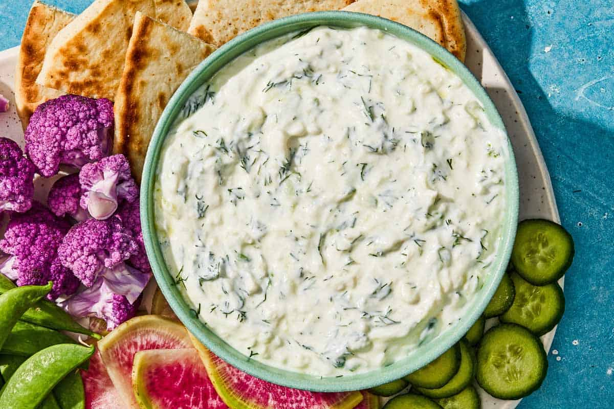

Tzatziki Sauce

Creamy Greek tzatziki with cucumber, yogurt, and garlic — don’t skip draining the cucumbers, or the sauce will be watery.
¾English cucumber, partially peeled (striped)1 tspkosher salt, divided4-5garlic cloves, finely grated or minced (start with 1-2 if you don’t want it too strong)1 tspwhite vinegar1 tbspextra virgin olive oil2 cupsplain Greek yogurt- handful of chopped fresh dill or mint (optional)
¼ tspground white pepper- warm pita bread, for serving
- sliced vegetables, for serving
Prepare the cucumbers. Grate the cucumber with a box grater or a small food processor. Toss the grated cucumber with ½ tsp kosher salt. Spoon it into a cheesecloth or a double-thickness napkin and squeeze dry — there will be a lot of liquid.
In a large mixing bowl, combine the garlic with the remaining ½ tsp salt, white vinegar, and olive oil. Mix to combine.
Add the grated cucumber, yogurt, and white pepper to the bowl with the garlic mixture, along with the fresh herbs, if using. Stir to combine.
Cover and refrigerate for 30 minutes to a couple of hours before serving. This thickens the sauce, gives it the best texture, and lets the flavors meld.
When ready to serve, stir to refresh and transfer to a serving bowl. Drizzle with more olive oil, if you like. Serve with your favorite veggies, pita chips, or wedges.